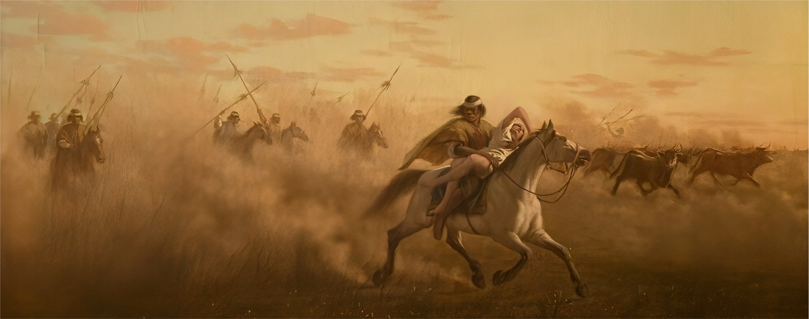

RESURGENCE OF
THE HOMELAND

1898
(Date of artwork)
(0) Introduction
The title of the work itself speaks of a Resurgence of the Homeland, a rebirth, but in this case,
in a new form under a riverist national state project, in contrast to the concept of a grand
homeland proclaimed by Artigas, under a federal, inclusive, and intercultural model,
representative of rights, territorial sovereignty, and identity sovereignty. It also represents
the people as a temporal rather than spatial identity, a concept rooted in the indigenous
peoples such as the Charrúa and Guarani, from which he drew inspiration.
In this work filled
with foundational images of the nation, different layers of symbolism are
present.
Adults
3:59 min.
Patricia Lannes, Educator's Voice
Adults
5:48 min.
Mónica Michelena, Charrúa Rep.
Children
1:16 min.
Mariana Valdés, Arte y Educación's Voice
In the following section, hold the cursor down to reveal the complete work.

Historical Context

(6) Related videos
.jpg)
JUAN
MANUEL
BLANES

(7) Author
(Montevideo, 1830 - Pisa, 1901) Uruguayan painter. In all his works, within the academicism of
historical reconstructions and unlike European romantic painters, he sought intimate national
values.
Considered one of the greatest artists of his country, Juan Manuel Blanes's academic work
constitutes an important link between Uruguayan painting of the 19th century and that of the
20th century. Between 1860 and 1864, he studied in Paris, Rome, and Florence, acquiring a
refined academic technique, primarily oriented towards naturalism.
OUR
INITIATIVE
(8)
Our proposal aims to provide training to museum and art space agents across the country to
approach works of art as generators of dialogues and debates situated in the here and now, and
in connection with the reality of museum visitors.
For this, we rely on analysis, reflection, and dialogue from different contemporary, critical,
and decolonial perspectives. We also draw support from various examples of mediation, different
museum narratives, and trends in education linked to these. All of this with the primary goal of
working practically on various strategies and methodologies to approach and empathize with
audiences.
Share